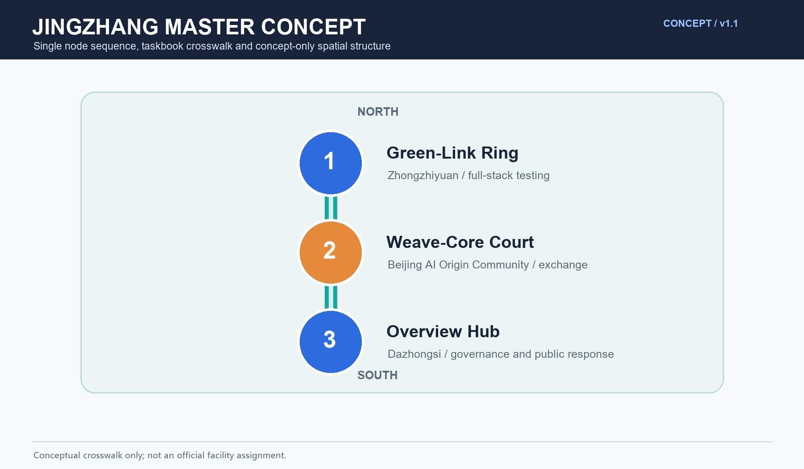
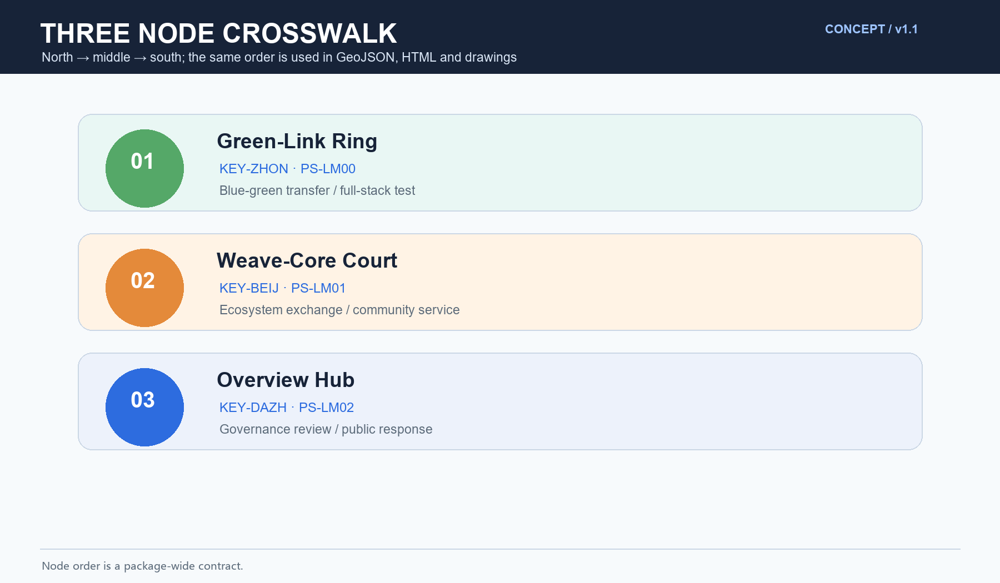
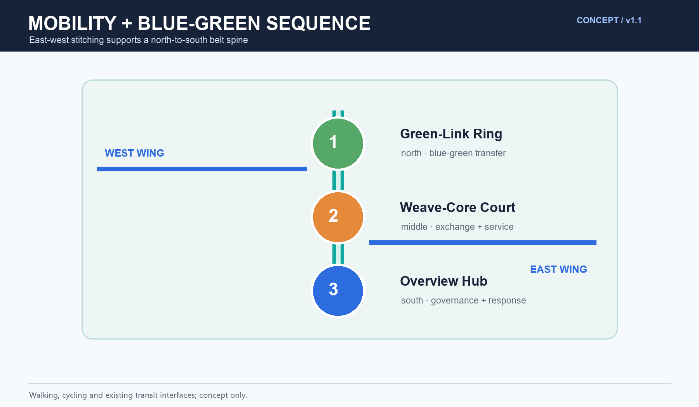
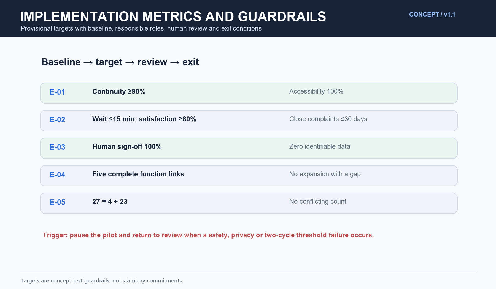

JINGZHANG MASTER CONCEPT — Overall Concept and Functional Coordination of the Jingzhang AI Innovation Belt (Concept)
An English companion to the Jingzhang Master Concept. It separates the five taskbook functions from their spatial translations, fixes the single north-to-south node sequence Green-Link Ring—Weave-Core Court—Overview Hub, and records a reproducible 27-feature land-use inventory with implementation thresholds, roles and exit conditions.
Jingzhang Master Concept: Overall Concept and Functional Coordination
This is a concept proposal for open review. It uses public and provisional evidence, does not replace statutory plans, and does not assert official FAR, building height, demolition, engineering feasibility or facility siting conclusions.
Design Basis and Source List
The design basis is the official call, the agent taskbook, public Jingzhang railway heritage material, public planning summaries, open spatial data and professional guidance. The authoritative source register is \sources.json\; provisional boundaries, professional review and later official data are explicit constraints.
Evidence anchors: \[source:DATA-SRC-OFFICIAL-ANNOUNCEMENT-20260509]\, \[source:DATA-SRC-AGENT-TASKBOOK-20260518]\.
Three-Level Scope Framework
The three levels are: the coordination research scope of the belt and connected districts; the overall design scope of the greenway and its interfaces; and detailed concept nodes. The only node sequence used in this package is north to south: Green-Link Ring, Weave-Core Court, Overview Hub. All crosswalks are conceptual and are not official facility assignments.
Industry and Future City Research in the Coordinated Study Scope
The belt connects research, translation, enterprise application and public experience through a spatial-industry loop. The proposal treats the belt as a civic interface for talent, culture, mobility and scenario testing. It does not promise investment, land conversion or a statutory development program.
Overall Design Scope: Urban Renewal and Regulatory-Depth Urban Design
The structure is one greenway axis, three spatial character zones, multiple beads and two east-west wings. The three taskbook positions are the Centennial Jingzhang Cultural Belt, the Metropolitan AI Life-Experience Belt and the AI Integration and Innovation Belt. The spatial expression layer uses cultural memory, innovation vitality and ecological livability; these are not substituted for the taskbook positions.
Taskbook functions and spatial translations
The taskbook functions are the source dimensions. The spatial functions below are design translations and must not be counted as the same list.
| Taskbook function | Spatial translation (not a renamed taskbook function) | Area/node | Agent, scenario and operation evidence |
|---|---|---|---|
| Full-stack AI autonomous innovation system | Full-stack test and factor-coordination corridor | Zhongzhiyuan AI Autonomous Innovation Acceleration Area / north Green-Link Ring | agent.1, agent.2; S-06 research coordination and S-08 developer testing; developer sandbox and quarterly factor review |
| World-class AI innovation ecosystem | International-facing exchange and ecosystem interface | Beijing AI Origin Community / middle Weave-Core Court | agent.2, agent.5, agent.6; S-02 international exchange and S-09 ecosystem release; partner register and public review |
| New paradigm of AI+ scenario enablement | Open scenario and public-experience belt | Xiaoyuehe Scenario Enablement Wing / all three nodes | agent.3, agent.4; S-03 public experience, S-04 blue-green sensing and S-07 mobility forecast; admission, human review and feedback loop |
| Intelligent AI-vital city | 15-minute service and blue-green slow-mobility network | Weave-Core Court and the two wings | agent.3, agent.4; S-01 daily service and S-05 traffic coordination; accessibility audit and dispatch |
| Global voice in AI governance | Anonymous aggregation—human review—public correction loop | Overview Hub / belt-wide governance interface | agent.1, agent.3, agent.6; S-05 governance review and T-02 public response; annual public review and appeal route |
The five spatial functions—heritage memory, innovation exchange, commercial life, blue-green recreation and mobility transfer—are a separate translation layer.


Detailed Design of Key Areas
The three concept nodes are aligned north to south as follows:
| Order | Node | Area crosswalk | Spatial role |
|---|---|---|---|
| 1 north | Green-Link Ring | \KEY-ZHON\ Zhongzhiyuan AI Autonomous Innovation Acceleration Area; \PS-LM00\ | Blue-green and slow-mobility transfer plus full-stack testing |
| 2 middle | Weave-Core Court | \KEY-BEIJ\ Beijing AI Origin Community; \PS-LM01\ | Ecosystem exchange, community services and open scenarios |
| 3 south | Overview Hub | \KEY-DAZH\ Dazhongsi AI Industry Cluster; \PS-LM02\ | Belt-wide display, governance review and public response |
The GeoJSON layers record \north_south_order\, \related_concept_node_id\ and the English/Chinese crosswalk. The locations are conceptual and require statutory, heritage, accessibility, safety and professional review.

AI Innovation Ecosystem, Talent Profiles and AI+ Scenarios
Five AI+ scenarios are proposed: overall operations visualization, functional matching assessment, greenway mobility forecasting, blue-green sensing, and aggregated public-participation feedback. The package contains five representative user profiles and three industry test scenarios. All sensing is anonymous and aggregated; consequential decisions require human sign-off.
Land Use, Building Scale, and Retain/Renovate/Demolish Strategy
The proposal follows retain-first, adaptive reuse and case-by-case removal. It does not set statutory intensity, height or demolition quantities.
The land-use inventory uses one reproducible definition: one unit equals one GeoJSON Feature. \geometry/land_use.geojson\ contains 27 features: four named roll-up/corridor features (\LU-ZHON\, \LU-BEIJ\, \LU-DAZH\, \LU-CORRIDOR\) and 23 \LU-G\ base-block features. This is an inventory count, not an additive area share; roll-up/corridor geometries must not be summed with base blocks. The category counts are park green 5, culture 3, research 4, commercial 3, business finance 6 and residential 6. Evidence: \[metric:land_use_zone_count]\, \[data:PACKAGE-GEOMETRY]\.
Transport, Rail, Municipal and Public Service Facilities
The greenway is a conceptual slow-mobility spine ordered Green-Link Ring—Weave-Core Court—Overview Hub. East-west stitching connects campuses, innovation districts and stations through walking, cycling and existing transit interfaces. Public service principles include accessibility, multilingual orientation, community services and human review for AI-supported decisions.

Blue-Green Space, Public Space and Urban Character
The greenway, cross-links, small parks, campuses and community greens form a connected blue-green network. Heritage references remain light, reversible and non-obstructive. Materials, signage, public art and night guidance follow a restrained family language rather than literal branding.
Renewal Project List, Implementation Policy and Phasing Plan
The concept project list has four families: coordination platform, slow-mobility continuity, adaptive reuse and blue-green stitching. The phases are near term 1–3 years, middle term 3–5 years and long term 5–10 years. Each test begins with a baseline, runs in a limited area, receives human review, and expands only when the target threshold is met.
| Evidence | Baseline | Target threshold | Responsible roles | Exit condition |
|---|---|---|---|---|
| E-01 Green-Link Ring | Two weekdays and one weekend walking/accessibility audit | Continuity ≥90%, key accessibility points 100%, review coverage 100% | agent.3/4; operator; community and accessibility reviewers | Two observation windows below target or an unresolved safety event |
| E-02 Weave-Core Court | Four-week anonymous flow, wait, satisfaction and complaint log | Peak average wait ≤15 minutes, satisfaction ≥80%, complaints closed within 30 days | agent.2/3; operator; human reviewer | Two cycles below target or unresolved safety/accessibility complaint |
| E-03 Overview Hub | Data dictionary, AI-output register, sign-off and response-time baseline | Human sign-off 100%, response ≤30 days, zero identifiable personal data | agent.1/6; data-protection and professional reviewers; public oversight | Any identifiable data, unsigned automated decision or out-of-scope use |
| E-04 Function crosswalk | Check every taskbook function through translation, area, agent, scenario, drawing and operation | Five complete traceable rows; no expansion with a missing link | agent.1 lead; agents.2–6; project sign-off | Broken traceability or mixed function vocabularies |
| E-05 Land-use inventory | Direct feature count and role labels | 27 = four roll-up/corridor + 23 \LU-G\; no conflicting count | agent.1/2 data review; planning reviewer | Changed feature count/role without synchronized outputs |
These are concept-test guardrails, not statutory commitments.
Metrics, Area Recalculation and Compliance Matrix
Metrics are provisional design indicators. The package keeps the single rule \count(features in geometry/land_use.geojson) == 27\, with explicit role labels and a non-additive area rule. \metrics.json\, \design_depth_matrix.json\, \compliance_matrix.json\, the HTML pages and the bilingual A0/A3 drawings point to this definition and to the node sequence.

Risk, Copyright and Compliance Statement
This concept does not constitute an administrative approval basis, statutory plan, engineering conclusion or official data release. Risks include provisional boundaries, planning coordination, implementation capacity, AI ethics and privacy. Controls are minimum necessary anonymous aggregation, human review, source labeling, public response and professional review. Names, text and diagrams are original concept work or public-domain references; no private data or unauthorized third-party assets are used.
References
See \sources.json\ for the package source register and access dates. Public references include Jingzhang railway history and heritage materials, Beijing planning summaries, urban design guidance, and public international linear-park and innovation-district cases. Official versions prevail when later data supersedes the concept evidence.